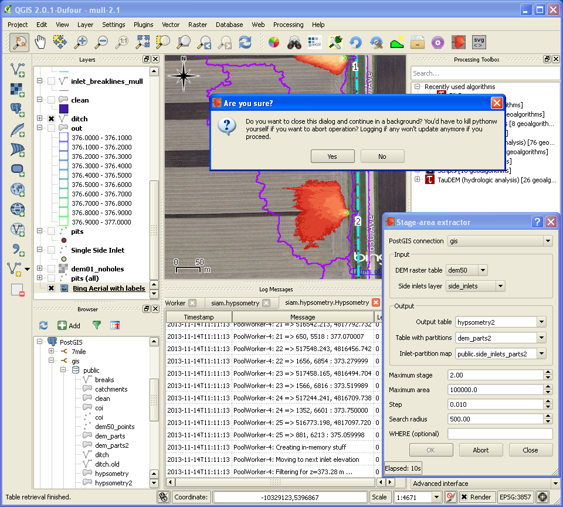

Usage
- Before using this plugin, set up PostGIS 2+
(1.x lacks support for rasters) if it is not done yet.
- Import your DEM and points
- Make reasonable assumptions on input parameters or accept defaults
- Use SQL to check whether output polygons are properly contained within partitions
and/or don’t intersect ditch etc.
You may consider adjusting logging configuration
(~/.qgis2/python/plugins/siam/logging.conf) to track down
possible issues. Note that logging to QGIS console is resource
intensive.
